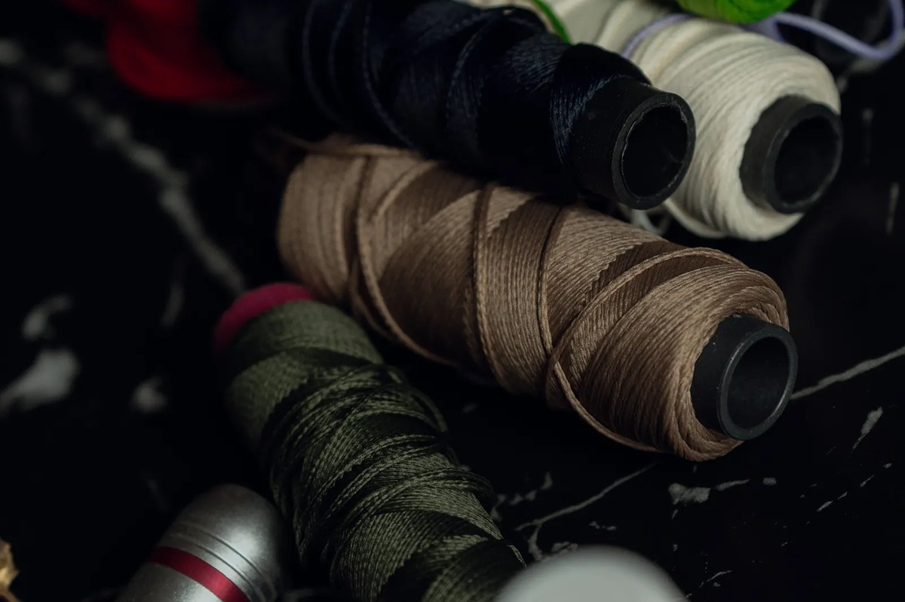
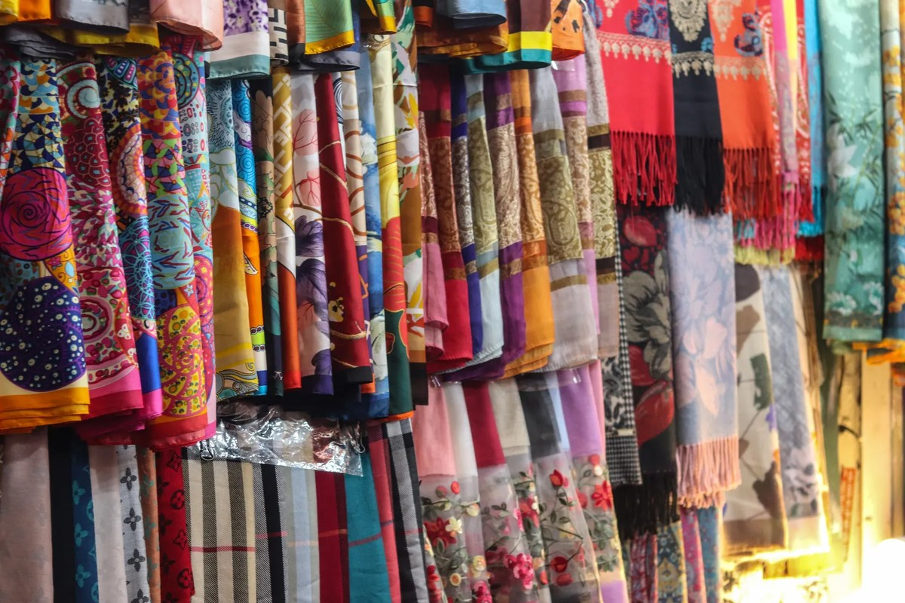
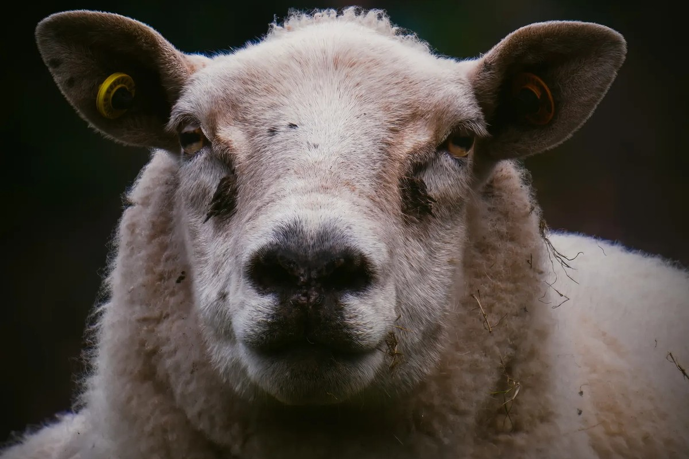
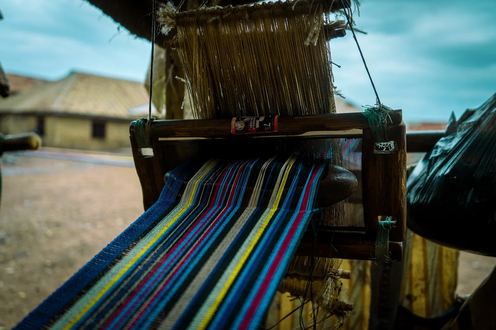
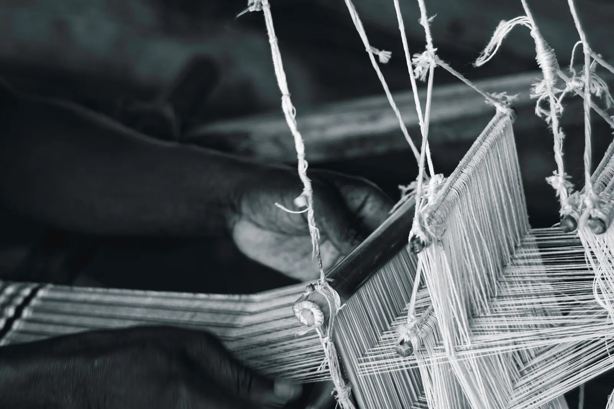

The Art of High-Tensile Sockcraft
Rooted in Colorado's high peaks, our guild exists to construct the most durable, blister-free merino wool anklet hosiery ever conceived.

Born from High Altitude Demands
Anklet Badger was founded by a collective of Colorado alpine guides, textile conservators, and circular machine technicians frustrated by the disposable nature of mass-produced athletic socks. In rugged backcountry terrain, blistered feet are a direct hazard to safety and endurance.
We set out to engineer an ankle-height sock that could withstand tens of thousands of abrasive friction cycles against leather boots while delivering natural temperature regulation across sudden Rocky Mountain weather shifts.
Ethical Mountain Merino Fleece
Our raw wool is harvested from certified non-mulesed alpine flocks grazing at high elevations where cold climates trigger the growth of extraordinarily fine, crimped wool fleece. With an average diameter of 18.5 microns, each staple fiber bends effortlessly against sensitive skin.
We retain natural trace amounts of restorative lanolin during washing to give our spun yarns inherent water repellency and soft elasticity, protecting against moisture accumulation throughout multi-hour alpine hikes.

The Four-Ply Badger Heel Shield
The calcaneus heel bone absorbs several hundred pounds of peak mechanical pressure on steep trail descents. Standard socks wear thin in this critical friction zone within a single season of hard hiking.
Anklet Badger reinforces the heel cup and Achilles pocket with four strands of interwoven core-spun nylon filament, creating an armored cushion bed that disperses impact energy and prevents boot wear-through permanently.

Ring-Spun Heather Yarns
Unlike brittle open-end industrial spinning, our wool yarns are ring-spun with deliberate balance between yarn twist and fiber loft. This produces high tensile resistance while allowing individual wool fibers to trap dead air for natural climate insulation.
Earthy heather flecks of charcoal, highland moss, and umber are blended directly into the raw sliver before spinning, creating rich visual depth that honors Colorado's rugged subalpine forests.

Zero-Migration Arch Architecture
When a sock slips or rotates inside a boot, blisters are inevitable. Anklet Badger knits a graduated elastane compression band directly around the medial arch and instep of each anklet.
This anatomic compression band anchors the sock securely to the midfoot, actively supporting the plantar fascia while maintaining a sleek, non-bunching profile inside technical hiking and running footwear.

Non-Binding Ribbed Cuff Seal
Tight elastic bands cut off venous return and cause lower leg fatigue during long days in the mountains. We engineer our anklet cuffs with a dual-rib memory weave that stays securely upright above the ankle bone without pinching.
The cuff acts as an impenetrable barrier against scree, pebbles, pine needles, and dust, sealing the boot collar while maintaining optimal peripheral blood circulation.
Crafted in Denver, Tested in the Rockies
Our Denver headquarters on California Street serves as our laboratory, design atelier, and private consultation salon. Every design alteration is field-tested across 14,000-foot peaks before joining our permanent collection.
Explore the Full Matrix